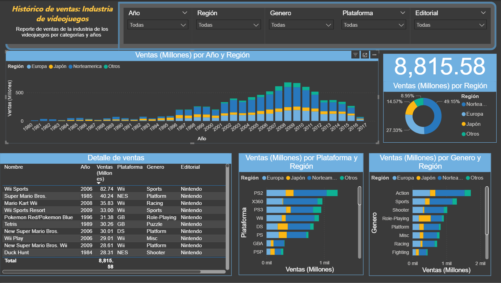

Analysis of Video Game Sales and Dashboard Insights
Investigator: Valentin Imperio
This report presents an in-depth analysis of the provided video game sales dataset. The purpose of this analysis is to identify key trends and business insights within the video game industry. The data, sourced from a comprehensive Excel file and visualized through a Power BI dashboard, reveals significant patterns in sales over time, highlights the most successful gaming platforms and publishers, and provides a breakdown of sales across different global regions. These findings are crucial for understanding market dynamics and can inform strategic business decisions.
Objective
The primary objective of this report is to uncover and summarize key trends from the video game sales data. This includes identifying top-selling games and their respective platforms, analyzing sales trends on an annual basis, determining the best-selling gaming platforms and genres, breaking down regional sales to understand market dominance, and evaluating the performance of key publishers in the industry.
Data Sources
- Excel: Ventas Videojuegos.xlsx (video game sales dataset)
- Power BI: PProyecto 01.pbix (interactive Power BI dashboard)
Methodology
The analysis began with a review of the Excel dataset, which was used to identify key metrics and relationships between variables such as Nombre, Plataforma, Año, Genero, Editorial and Ventas Global. These insights were then modeled to create a comprehensive Power BI dashboard, which provides a dynamic view of the data. This report synthesizes the core findings from that analysis into a static document.
Key Findings
- Overall Sales & Best-Selling Title: The dataset includes thousands of video games released between 1982 and 2016. The top-selling game is Wii Sports (2006) with a total of 82.74 million global sales.
- Top Platforms: Based on the amount of games sales, the most successful platforms is the PS2 followed closely by the Xbox 360.
- Regional Trends: Significant regional sales patterns are evident in the data. While North America holds a commanding lead in sales for console-exclusive titles, Europe shows a clear market dominance for PC gaming. This divergence underscores the importance of a region-specific approach to marketing and distribution.
- Publisher Performance: Nintendo dominates the market, with most of the titles appearing among the top-selling games.)

Conclusions
- This analysis confirms the enduring popularity of classic franchises and the strong market presence of key publishers and platforms. Nintendo, in particular, dominates the market due to its unique positioning: unlike other major third-party publishers such as Electronic Arts (EA) or Activision, Nintendo benefits from both developing blockbuster franchises and controlling its own hardware platforms (e.g., Wii, DS, NES). This vertical integration allows it to capture a larger share of the market and build long-lasting brand loyalty.
- The insights derived from this data can be used to inform business strategy, such as identifying potential growth markets, focusing on popular genres, or evaluating the risks and opportunities of platform exclusivity. For publishers outside of Nintendo, this analysis suggests the importance of diversifying across platforms and leveraging partnerships to remain competitive in a market where a few players can command outsized influence.
Last updated on September 15th, 2025